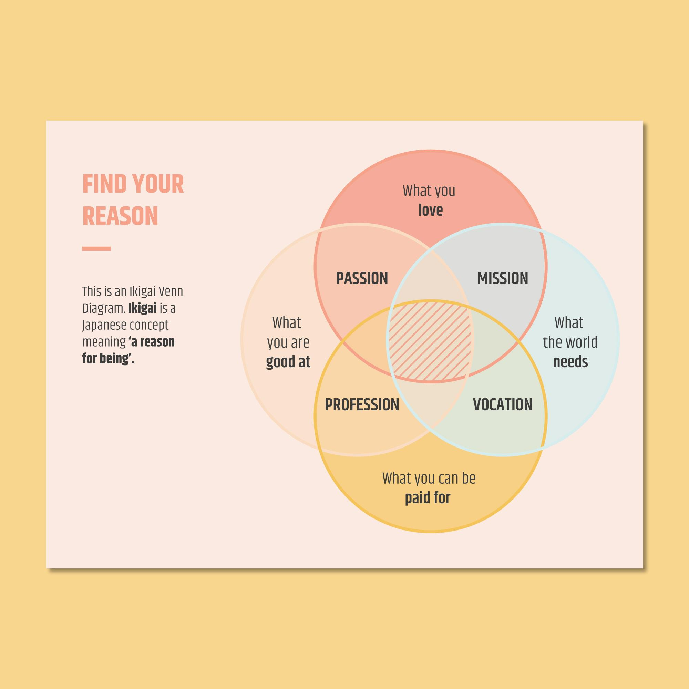

What is Ikigai?
Ikigai (生き甲斐, pronounced “ee-kee-guy”) is a Japanese concept that means “a reason for being.” It is a way of finding your purpose in life and living a fulfilling existence. The word ikigai is made up of two Japanese words: iki, which means “life,” and kai, which means “value” or “worth.” Ikigai is often depicted as a diagram with four quadrants:
The intersection of these four quadrants is your ikigai. When you are doing something that is aligned with your ikigai, you are more likely to be happy, motivated, and productive. There are many ways to find your ikigai. One way is to think about what you are passionate about and what you are good at. What are the things that make you come alive? What are the things that you could do for free? Once you have a good idea of your passions and talents, you can start to think about how you can use them to help others. What are the problems in the world that you care about? How can you use your skills and talents to make a difference? Finding your ikigai is not always easy, but it is worth the effort. When you live a life that is aligned with your ikigai, you are more likely to experience a sense of purpose, satisfaction, and joy.